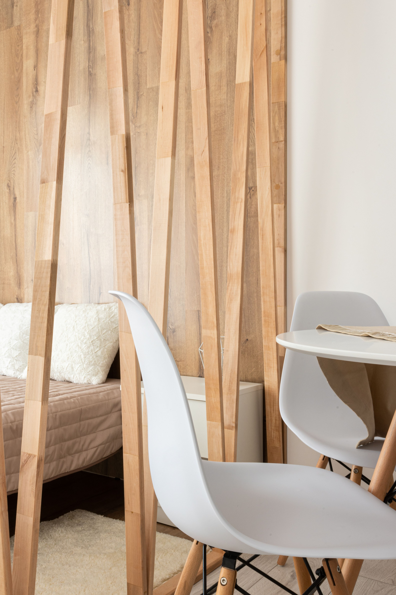

En este artículo
Introducción
El verano combina más horas de luz, temperaturas elevadas y una evaporación más rápida, de modo que las plantas necesitan observación frecuente para ajustar riego, exposición solar y ventilación sin caer en excesos.
Antes de aplicar cualquier recomendación conviene identificar las características concretas del material, la planta o el espacio. Las soluciones más seguras son aquellas que respetan esas diferencias y pueden mantenerse con una rutina realista.
Regar bien durante los días calurosos
Con calor, el sustrato puede secarse más rápido, pero eso no significa que todas las plantas deban regarse diariamente. Comprueba la humedad antes de añadir agua. Introducir un dedo en los primeros centímetros, observar el peso de la maceta y conocer el aspecto habitual de la planta ofrece información más útil que seguir un horario rígido.
Cuando sea necesario regar, hazlo de manera profunda hasta que el agua alcance todo el cepellón y salga por los orificios de drenaje. Vacía el exceso de los platos. Los riegos superficiales y muy frecuentes pueden humedecer solo la parte superior y favorecer raíces concentradas cerca de la superficie.
Las primeras horas de la mañana suelen ser prácticas para regar exteriores porque las temperaturas son más suaves. En macetas pequeñas, revisa con mayor frecuencia, especialmente en balcones con viento. Añadir una capa adecuada de acolchado en jardineras y suelo puede reducir evaporación, procurando mantenerla separada de tallos sensibles.
Además de estos cuidados, conviene trabajar con una lógica preventiva. Esperar a que aparezca un problema grande suele exigir más tiempo, dinero y esfuerzo que realizar pequeñas revisiones. Observa cambios de color, textura, humedad, estabilidad o comportamiento y compáralos con el estado habitual. Esa atención permite actuar con mayor precisión y evita aplicar soluciones innecesarias.
También es útil conservar las instrucciones de productos, muebles, macetas o materiales utilizados. Cuando llega el momento de limpiar, mantener o sustituir una pieza, esa información evita improvisaciones. Si una recomendación del fabricante contradice un consejo genérico, debe prevalecer la indicación específica para ese producto.
Proteger las plantas del exceso de sol
Una planta que disfruta de luz intensa no necesariamente tolera el sol directo del mediodía. Las hojas pueden quemarse cuando una especie acostumbrada a interior se traslada de golpe a una terraza soleada. Aclimata gradualmente cualquier planta que vaya a recibir una exposición mayor.
En interiores, cortinas ligeras pueden filtrar una ventana muy intensa. Observa la trayectoria del sol: una ventana que era suave en primavera puede recibir horas de radiación fuerte en verano. Las manchas pálidas, secas o marrones en las zonas más expuestas pueden indicar daño solar, aunque conviene descartar otras causas.

En el jardín, las plantas recién trasplantadas son especialmente sensibles mientras establecen raíces. Sombreo temporal y riego atento pueden reducir el estrés. Evita podas intensas durante episodios de calor extremo salvo que sean necesarias por seguridad o sanidad vegetal.
La frecuencia de mantenimiento no debería convertirse en una obligación rígida. Una vivienda con niños, mascotas o uso intenso necesita revisiones distintas de una casa utilizada ocasionalmente; del mismo modo, una planta situada en una ventana soleada no se comporta igual que otra de la misma especie en una habitación fresca. Ajustar la rutina a las condiciones reales es parte de un buen cuidado.
Cuando pruebes un cambio, modifica una variable cada vez siempre que sea posible. Así podrás entender mejor qué produjo una mejora o un problema. Cambiar simultáneamente ubicación, riego, producto de limpieza y exposición hace mucho más difícil identificar la causa de la respuesta observada.
Controlar humedad y temperatura
El calor aumenta la evaporación y modifica el ambiente alrededor de las plantas. Algunas especies tropicales agradecen humedad ambiental moderada, pero mantener hojas y sustrato constantemente mojados no es la solución. La humedad excesiva combinada con mala circulación puede favorecer hongos y otros problemas.
Aleja macetas de superficies que acumulan mucho calor si notas que las raíces se recalientan. Recipientes oscuros expuestos al sol pueden alcanzar temperaturas elevadas. Una segunda maceta decorativa, sombra sobre el recipiente o un cambio de posición puede ayudar, siempre sin bloquear el drenaje.
Dentro de casa, un ventilador puede mejorar la circulación general, pero evita dirigir una corriente fuerte y constante sobre hojas delicadas. Si utilizas aire acondicionado, no coloques plantas sensibles justo frente a la salida de aire frío.
El presupuesto también forma parte del mantenimiento. No siempre el producto más caro es el más adecuado, ni es necesario acumular soluciones especializadas para cada tarea. Prioriza herramientas y productos compatibles con el material o la especie, sigue las dosis indicadas y evita compras impulsivas. Un sistema sencillo que realmente se utiliza suele funcionar mejor que una colección de productos olvidados.
Por último, la seguridad debe estar presente en cualquier tarea. Guarda productos fuera del alcance de niños y animales, ventila cuando corresponda y utiliza protección personal si la etiqueta lo exige. En trabajos que impliquen daños estructurales, electricidad, productos peligrosos o restauraciones delicadas, recurrir a un profesional puede evitar riesgos y daños mayores.
Ventilación y prevención de problemas
El verano también puede favorecer plagas como ácaros, pulgones o cochinillas, según el ambiente y la especie. Revisa el envés de las hojas, brotes nuevos y uniones de tallos. Actuar cuando aparecen los primeros individuos suele ser más sencillo que esperar a una infestación grande.

Retira hojas secas y flores marchitas cuando corresponda para mantener el espacio limpio. Lava herramientas antes de utilizarlas en distintas plantas si existe riesgo de transmitir enfermedades. No apliques tratamientos bajo sol intenso sin comprobar las instrucciones del producto, ya que algunas sustancias pueden causar daños.
La ventilación debe equilibrarse con las necesidades de humedad. Un espacio cerrado, muy caliente y sin movimiento de aire puede generar estrés. En invernaderos y galerías acristaladas, controla especialmente la temperatura durante las horas centrales.
Además de estos cuidados, conviene trabajar con una lógica preventiva. Esperar a que aparezca un problema grande suele exigir más tiempo, dinero y esfuerzo que realizar pequeñas revisiones. Observa cambios de color, textura, humedad, estabilidad o comportamiento y compáralos con el estado habitual. Esa atención permite actuar con mayor precisión y evita aplicar soluciones innecesarias.
También es útil conservar las instrucciones de productos, muebles, macetas o materiales utilizados. Cuando llega el momento de limpiar, mantener o sustituir una pieza, esa información evita improvisaciones. Si una recomendación del fabricante contradice un consejo genérico, debe prevalecer la indicación específica para ese producto.
Rutina práctica para vacaciones y olas de calor
Antes de una ola de calor, revisa cuáles son las plantas más vulnerables: macetas pequeñas, ejemplares recién plantados y especies que prefieren ambientes frescos. Muévelas temporalmente a un lugar protegido cuando sea apropiado y riega según la humedad real del sustrato.
Si vas a viajar, no compenses con un riego exagerado antes de salir. Organiza un sistema de riego adecuado, pide ayuda a alguien o utiliza soluciones de autorriego probadas previamente. Cualquier sistema debe ensayarse varios días antes para comprobar que entrega la cantidad correcta.
Al regresar, observa antes de actuar. Una planta marchita puede necesitar agua, pero una planta con raíces encharcadas también puede mostrar hojas caídas. Revisar el sustrato evita empeorar el problema. La rutina de verano funciona mejor cuando combina prevención, observación y ajustes pequeños.
La frecuencia de mantenimiento no debería convertirse en una obligación rígida. Una vivienda con niños, mascotas o uso intenso necesita revisiones distintas de una casa utilizada ocasionalmente; del mismo modo, una planta situada en una ventana soleada no se comporta igual que otra de la misma especie en una habitación fresca. Ajustar la rutina a las condiciones reales es parte de un buen cuidado.

Cuando pruebes un cambio, modifica una variable cada vez siempre que sea posible. Así podrás entender mejor qué produjo una mejora o un problema. Cambiar simultáneamente ubicación, riego, producto de limpieza y exposición hace mucho más difícil identificar la causa de la respuesta observada.
Plan de cuidados para los periodos más calurosos
Cuando se anuncian varios días de temperaturas elevadas, revisa el jardín o la colección antes de que llegue el pico de calor. Comprueba qué macetas se secan primero, cuáles reciben sol en las horas centrales y qué plantas fueron trasplantadas recientemente. Priorizar los ejemplares vulnerables permite utilizar mejor el tiempo y el agua.
En balcones, el viento puede acelerar mucho la pérdida de humedad. Agrupar algunas macetas, sin impedir la ventilación, puede reducir exposición. Comprueba que los recipientes tengan drenaje y que los platos no permanezcan llenos. En jardines, una capa de acolchado apropiada ayuda a conservar humedad y mantiene el suelo más estable.
Después de un episodio de calor, no podes inmediatamente todas las hojas dañadas si todavía ofrecen sombra a tejidos interiores, salvo que exista una razón sanitaria. Espera a que las condiciones se estabilicen y evalúa qué partes están realmente muertas. Mantener un registro fotográfico puede ayudar a observar la recuperación.
El verano también es buen momento para revisar sistemas de riego. Busca goteros obstruidos, mangueras con fugas y zonas que reciben más o menos agua de la prevista. Corregir la distribución puede ahorrar agua y evitar que unas plantas se encharquen mientras otras permanecen secas.
Errores que conviene evitar
Uno de los errores más frecuentes es aplicar una solución universal sin comprobar las características del caso concreto. Los materiales, las plantas y los espacios responden de manera distinta según su composición, ubicación, uso y estado. Antes de intervenir, identifica esas variables y empieza por la opción menos agresiva.
Otro error es cambiar demasiadas cosas al mismo tiempo. Si modificas productos, ubicación, frecuencia de mantenimiento y condiciones ambientales en una sola jornada, después será difícil saber qué produjo el resultado. Los cambios graduales facilitan evaluar la respuesta y corregir a tiempo.
También conviene evitar el exceso de mantenimiento. Limpiar, regar, pulir, fertilizar o reorganizar más de lo necesario puede ser tan problemático como descuidar. Una rutina basada en observación permite intervenir cuando existe una necesidad real y mantener el equilibrio a largo plazo.
Preguntas frecuentes
¿Debo regar las plantas todos los días en verano?
No necesariamente. La frecuencia depende de especie, maceta, temperatura, viento y humedad del sustrato. Comprueba antes de regar.
¿Cuál es la mejor hora para regar?
En exteriores, las primeras horas de la mañana suelen ser convenientes porque las temperaturas son más suaves y se reduce la evaporación.
¿Cómo proteger las plantas durante una ola de calor?
Reduce la exposición extrema cuando la especie lo necesite, vigila la humedad, protege macetas que se recalientan y evita trasplantes o podas intensas innecesarias.
Conclusión
Cuidar y personalizar un espacio funciona mejor cuando las decisiones responden a sus condiciones reales. En el caso de cómo cuidar las plantas durante el verano, observar antes de actuar, utilizar métodos compatibles y mantener una rutina sencilla permite obtener resultados más duraderos. No es necesario intervenir constantemente: la constancia, la prevención y los ajustes realizados a tiempo suelen ser más eficaces que las soluciones agresivas o improvisadas.